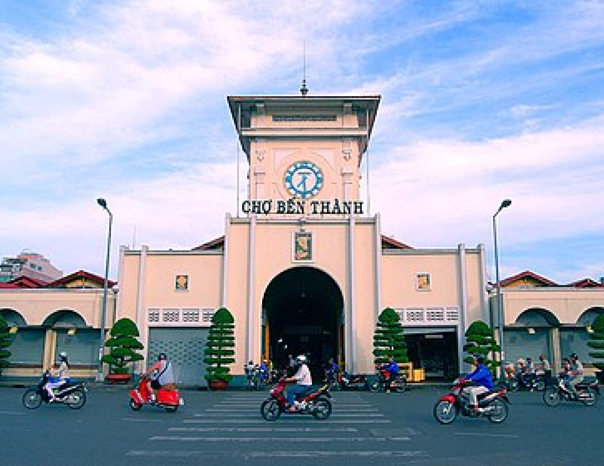
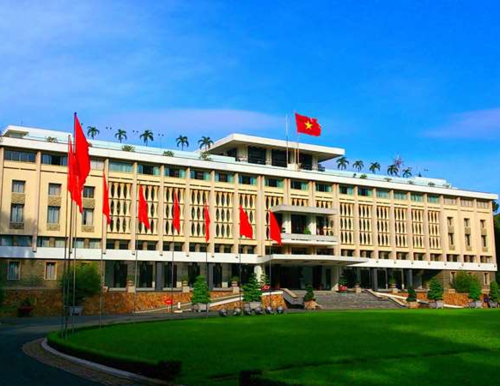
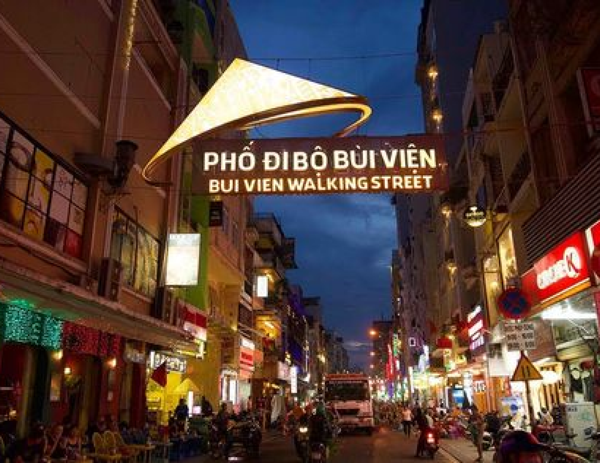
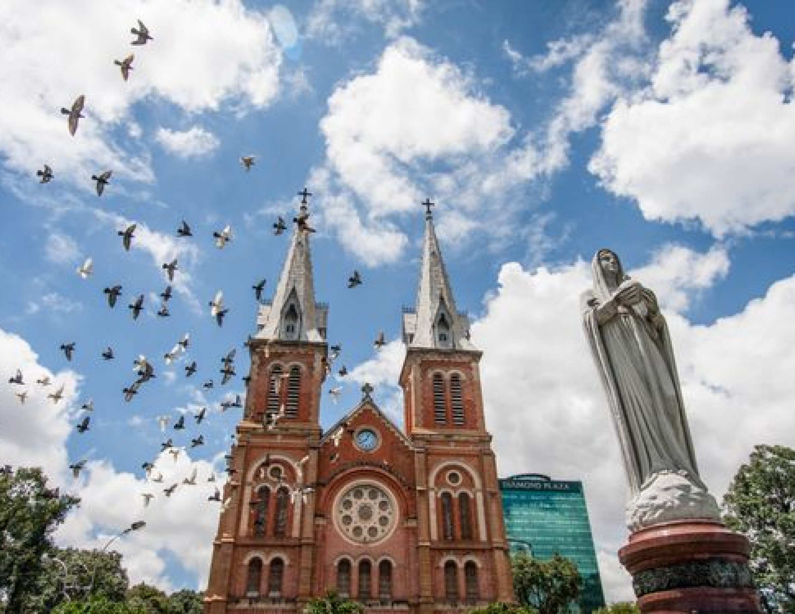
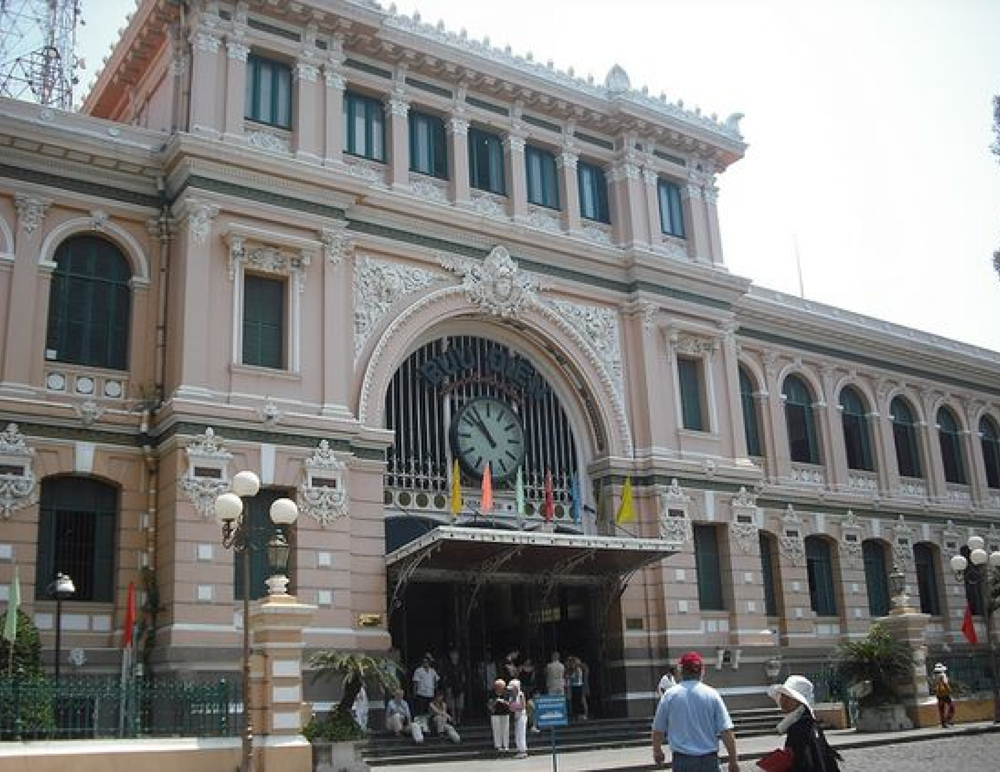

HO CHI MINH CITY
Ho Chi Minh City, formerly known as Saigon, is Vietnam’s largest and most vibrant metropolis, located in
the southern part of the country. This bustling city is a dynamic fusion of the old and the new, where
historic French colonial buildings stand alongside modern skyscrapers. Visitors can explore a variety of
attractions, from the historic War Remnants Museum and the opulent Notre-Dame Cathedral to the bustling
Ben Thanh Market and lively street food scene. With its rich cultural heritage, energetic atmosphere,
and diverse culinary offerings, Ho Chi Minh City provides a captivating experience for travelers seeking
both history and modern excitement.

Ben Thanh Market
Ben Thanh Market, a bustling hub in Ho Chi Minh City, is a must-visit for locals and tourists.
Established in 1914, it offers a diverse array of goods, from fresh produce and handicrafts to
clothing and souvenirs. Visitors can enjoy local street food and experience the vibrant culture of
the city, making it a cultural landmark that reflects the spirit of Ho Chi Minh City.
Adress:
Ben Thanh Market, Le Loi Street, District 1, Ho Chi Minh City, Vietnam
Independence Palace.
The Independence Palace, or Reunification Palace, is a historic landmark in Ho Chi Minh City. Once
the presidential residence and government headquarters during the Vietnam War, it is now a museum
with 1960s architecture, historical artifacts, and insights into Vietnam’s modern history. Visitors
can explore grand halls, gardens, and wartime bunkers, making it a key cultural attraction.
Adress:
Nam Ky Khoi Nghia Street, District 1, Ho Chi Minh City, Vietnam.


Bui Vien Street
Bui Vien Street, in the heart of Ho Chi Minh City’s District 1, is known for its vibrant nightlife
and bustling atmosphere. Often called the city's backpacker district, it features bars, restaurants,
and street vendors catering to both locals and tourists. With live music, late-night food, and a
lively crowd, Bui Vien is a must-visit for experiencing the city's dynamic nightlife.
Adress:
Bui Vien Street, District 1, Ho Chi Minh City, Vietnam.
DUC BA Cathedral
Duc Ba Cathedral, or the Basilica of Our Lady of Immaculate Conception, is a stunning landmark in Ho
Chi Minh City. Built in the late 19th century during the French colonial era, it is known for its
neo-Romanesque architecture, twin bell towers, and stained glass windows. Located in the city
center, it stands as a symbol of historical charm and cultural heritage.
Adress:
Cong Xa Paris, Ben Nghe Ward, District 1, Ho Chi Minh City, Vietnam.


Central Post Office
The Central Post Office in Ho Chi Minh City is a stunning example of French colonial architecture.
Designed by Gustave Eiffel, it features intricate details, a grand clock tower, and a well-preserved
interior. Still a functional post office, it offers a glimpse into the city’s colonial past and
remains a popular attraction for both tourists and locals.
Adress:
Cong Xa Paris, Ben Nghe, District 1, Ho Chi Minh City, Vietnam.